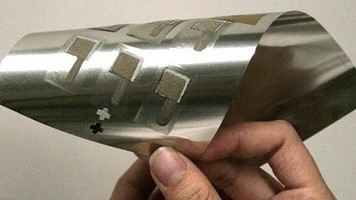
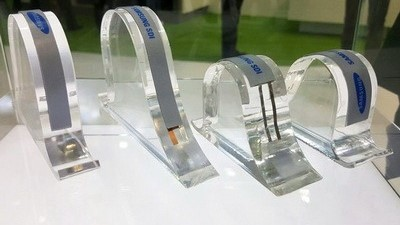

-ГИБКИЕ АККУМУЛЯТОРЫ-
— полимерные подложки или низко-производительные органические материалы, занимающие слишком много пространства, а также приводящие к снижению емкости элемента;
— катоды. Для улучшения их свойств они подвергались высокотемпературной обработке;
— гибкие полимеры, которые разрушаются при высоких температурах.
2)Исследователи из KAIST предложили версию гибкой литий-ионной батареи;
— тонкая пластина из неорганического материала, которой не страшны высокие температуры;
— на нее уложены в несколько слоев при помощи клейкой ленты следующие элементы: анод, электролит катод и токоприемник. В результате были выделены части из двух полимерных пленок со слюдой с активными слоями.Скручивание подобной гибкой батареи довольно слабо сказывается на ее производительности. Напряжение при сильном сгибании почти не меняется, а емкость снижается не больше 7 процентов. Для коммерческого использования ученым необходимо научиться разделять слои в промышленных условиях. Возможно, этого можно будет добиться применением лазерного метода деламинации.
3)Исследователи из Технологического института Нью-Джерси создали собственный прототип гибких батарей;— гибкая пластиковая подложка, которая пропитана электро-активными ингредиентами;
— электро-активные ингредиенты включают в себя микрочастицы и нанотрубки;
— микрочастицы выполняются из литиевых солей (литиевые батареи) или из цинка с добавлением диоксида марганца (щелочные батареи).
Прототип представляет мягкий конверт или пакет, где находятся два электрода — один в виде графитовой пены, а другой – алюминиевый. Все это погружается в специальный солевой раствор. Такая батарея заряжается меньше минуты, очень надежна и безопасна в сравнении с литий-ионными батареями, однако обеспечивает вдвое меньшее напряжение. Применение графита позволяет получать отличную производительность, но до промышленного изготовления батарей будет нужно несколько лет исследований. 4)LG Chem, член корпорации LG, создала литий-ионный аккумулятор в виде кабеля, который имеет диаметр в несколько миллиметров. У нее такая гибкость, что ее можно носить в виде браслета, завязывать узлом и даже соткать ткань из подобных батарей. Устройство у нее следующее:— Катод из окиси лития-кобальта.
— Анод.
— Электролит.
Главное отличие в том, что все компоненты кабеля-аккумулятора выполнены в виде гибких спиралей, а не располагаются в виде плоских слоев. В качестве катода выступают тонкие медные провода, покрытые специальным слоем из сплава никеля и олова. Такие нити сплетаются в более толстое волокно, оно обертывается вокруг стержня диаметром 1,5 мм. С удалением стержня остается весьма гибкая и прочная спираль будущего анода. Поверх спирали наматывается алюминиевая лента, после чего погружается в жидкий раствор окиси лития-кобальта, чтобы создать катод аккумулятора.Исследователи из KAIST предложили версию гибкой литий-ионной батареи; — тонкая пластина из неорганического материала, которой не страшны высокие температуры; — на нее уложены в несколько слоев при помощи клейкой ленты следующие элементы: анод, электролит катод и токоприемник. В результате были выделены части из двух полимерных пленок со слюдой с активными слоями. Скручивание подобной гибкой батареи довольно слабо сказывается на ее производительности. Напряжение при сильном сгибании почти не меняется, а емкость снижается не больше 7 процентов. Для коммерческого использования ученым необходимо научиться разделять слои в промышленных условиях. Возможно, этого можно будет добиться применением лазерного метода деламинации. Исследователи из Технологического института Нью-Джерси создали собственный прототип гибких батарей; — гибкая пластиковая подложка, которая пропитана электро-активными ингредиентами; — электро-активные ингредиенты включают в себя микрочастицы и нанотрубки; — микрочастицы выполняются из литиевых солей (литиевые батареи) или из цинка с добавлением диоксида марганца (щелочные батареи). Прототип представляет мягкий конверт или пакет, где находятся два электрода — один в виде графитовой пены, а другой – алюминиевый. Все это погружается в специальный солевой раствор. Такая батарея заряжается меньше минуты, очень надежна и безопасна в сравнении с литий-ионными батареями, однако обеспечивает вдвое меньшее напряжение. Применение графита позволяет получать отличную производительность, но до промышленного изготовления батарей будет нужно несколько лет исследований. LG Chem, член корпорации LG, создала литий-ионный аккумулятор в виде кабеля, который имеет диаметр в несколько миллиметров. У нее такая гибкость, что ее можно носить в виде браслета, завязывать узлом и даже соткать ткань из подобных батарей. Устройство у нее следующее: — Катод из окиси лития-кобальта. — Анод. — Электролит. Главное отличие в том, что все компоненты кабеля-аккумулятора выполнены в виде гибких спиралей, а не располагаются в виде плоских слоев. В качестве катода выступают тонкие медные провода, покрытые специальным слоем из сплава никеля и олова. Такие нити сплетаются в более толстое волокно, оно обертывается вокруг стержня диаметром 1,5 мм. С удалением стержня остается весьма гибкая и прочная спираль будущего анода. Поверх спирали наматывается алюминиевая лента, после чего погружается в жидкий раствор окиси лития-кобальта, чтобы создать катод аккумулятора.Получившуюся конструкцию закрывают защитной оберткой, а центральная полость наполняется жидким электролитом. Плотность хранения энергии и напряжение полностью соответствует обычным литий-ионным батареям, но они более гибкие и тонкие.

На текущий момент изобретение гибких литий-ионных аккумуляторов пока что находится в стадии производства прототипа. Однако в ближайшие годы планируется коммерциализировать указанное изобретение. В то же время батарея уже испытана и подтвердила, что может выдерживать изгибы, повороты и иные деформации, сохраняя собственную способность удерживать заряд. Но есть компании, которые продолжают линейку уже существующих аккумуляторов, создавая образцы литий-ионных батарей, обладающих способностью к деформации. Так в гибких батареях компании Panasonic применяется внутренняя структура проводки и многослойные наружные корпусы, которые избегают, перегрев или утечку электролита. Корпус аккумулятора защищает ламинированная оболочка. Гибкие аккумуляторные батареи Panasonic имеют толщину в 0,55 мм, они могут изгибаться так, что по кривой они закручиваются в радиус 25 мм. Батареи Panasonic держат заряд в пределах 17,5-60 мАч. Для современных смартфонов этой мощности пока не хватает, но изобретение уже сегодня можно успешно использовать для маломощных устройств, к примеру, смарт-одежды или смарт-карт.

LG уже произвела телевизор, который вполне можно скрутить в рулон. В скором времени в магазинах вполне могут начать продавать погонные метры телевизоров, компьютеров и смартфонов. Другие компании также не отстают и внедряют гибкие батареи в различные устройства: Носимые гаджеты в виде часов, браслетов. Ремешки устройств. Многочисленные модели «умной» одежды, в которых сегодня применяется жесткий аккумулятор. Гибкие шторы, жалюзи. Телевизоры, смартфоны и так далее. Единственное, что данные устройства выполнены только в прототипах и небольших количествах, а также не лишены недостатков.